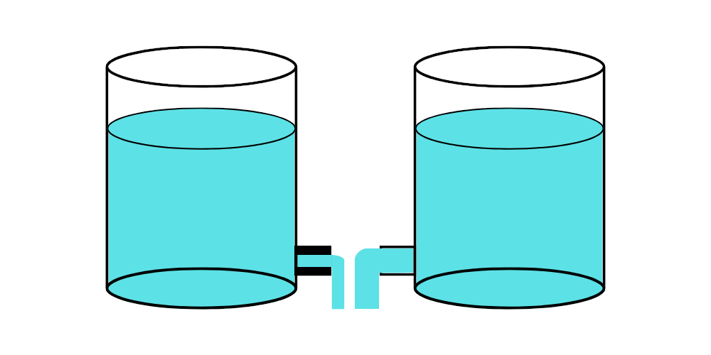
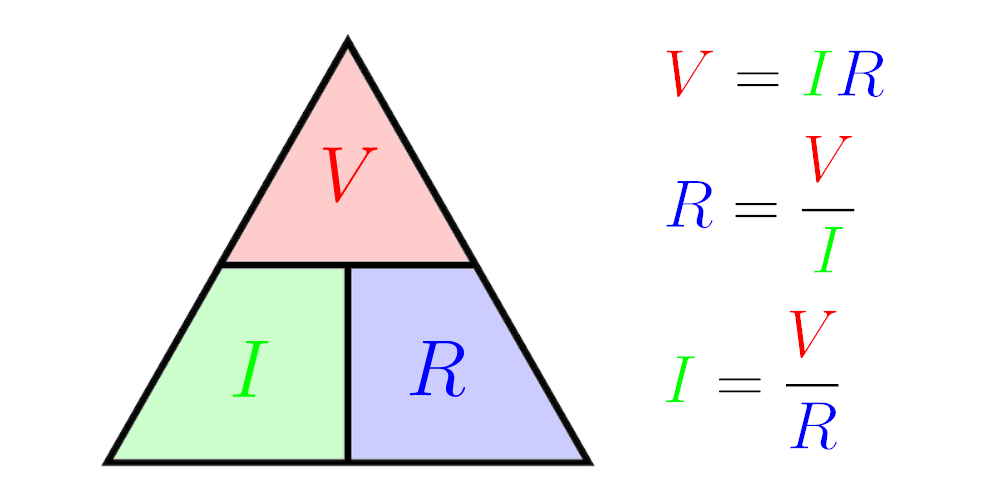
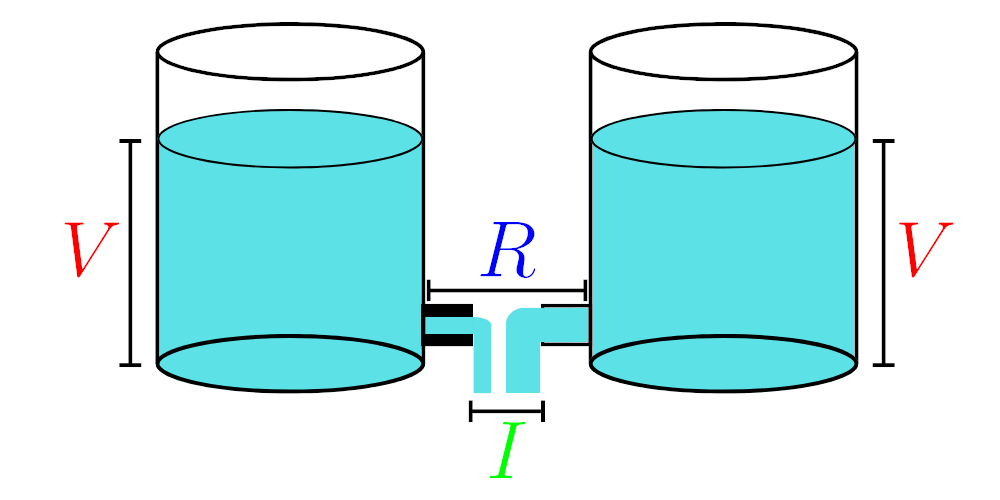
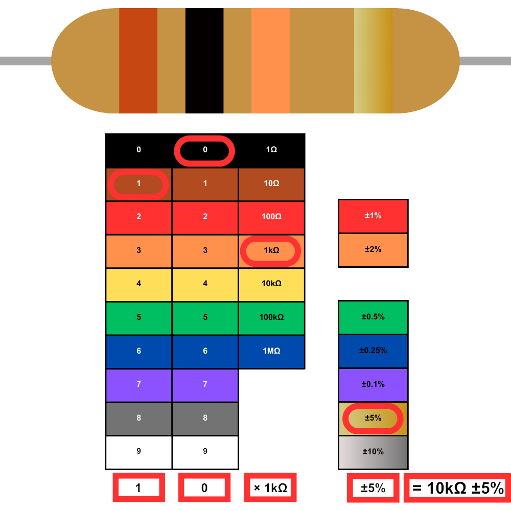

Resistors#
What is a Resistor?#
A resistor is an electronic component that limits the flow of electricity in a circuit, acting like a traffic controller for electrons.
Imagine electricity flowing through a wire is like water flowing through a pipe. Now, a resistor is like a pipe that’s a bit narrow or has something inside that makes it harder for the water to flow. In an electrical circuit, a resistor restricts the flow of electric current. It’s like putting an obstacle in the path of the electrons, making them slow down.

The amount of resistance is measured in ohms (Ω), just like how the narrowness of a pipe affects how much water can flow through it. So, if you have a high-resistance resistor, it’s like a narrow pipe; less current can flow through. But if you have a low-resistance resistor, it’s like a wider pipe; more current can flow through.
Resistors are used in circuits to control the current or voltage flow through different parts of the circuit. They can also divide voltage, limit current, or provide specific voltages for components like LEDs.
Ohm’s Law#
Ohm’s Law is the general rule for understanding how an electrical circuit’s voltage, current, and resistance are related. It says that the current (\(I\)) flowing through a conductor between two points is directly proportional to the voltage (\(V\)) across the two points and inversely proportional to the resistance (\(R\)) between them.

Returning to the water pipe analogy mentioned above, Ohm’s Law helps us understand how this flow works in circuits with resistors.
Voltage (\(V\)) is like the pressure pushing the water through the pipe. Imagine it’s the force behind the water moving.
Current (\(I\)) is like the amount of water flowing through the pipe. It’s how much water passes a certain point in a given time.
Resistance (\(R\)) is like the width of the pipe. A wider pipe allows more water to flow through, while a narrower one restricts the flow.

Resistor Color Bands#
Resistor color bands are a visual code representing the resistance value and tolerance of a resistor, helping engineers and hobbyists quickly identify its specifications in electronic circuits.
There are 2 types or resistors included in most hobby kits as displayed below:

Four-band resistors are more common. They are also easier to interpret as the colors are easier to distinguish. TODO
TODO: LINK TO FIVE-BAND CHART
TODO:EXPLAIN 1ST DIGIT, 2ND DIGIT, AND MULTIPLIER
Interpreting Four-Band Resistor Color Bands#

Checkpoint: Interpreting Resistor Values#
Click here to reveal the solutions.
Solutions:
A: 1, 0, 1kΩ ⟹ 10 × 1kΩ = 10kΩ
B: 2, 7, 100Ω ⟹ 27 × 10Ω = 270Ω
C: 4, 7, 100Ω ⟹ 47 × 100Ω = 4700Ω = 4.7kΩ
D: 1, 0, 10Ω ⟹ 10 × 10Ω = 100Ω